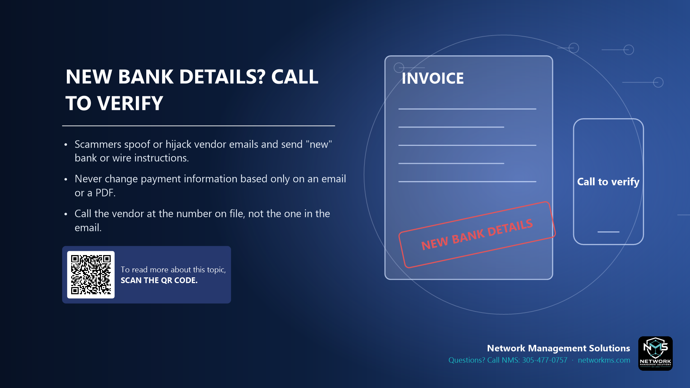

New bank details? Call to verify

- Scammers spoof or hijack vendor emails and send "new" bank or wire instructions.
- Never change payment information based only on an email or a PDF.
- Call the vendor at the number on file, not the one in the email.
This scam is called Business Email Compromise (BEC). A criminal gets into a vendor's or client's mailbox, or makes a look-alike address, and waits for a real invoice. Then they send a message saying the bank account has changed.
The email looks normal, uses the right names and may continue a real conversation. The only change is where the money goes. Once a wire or ACH is sent, it is very hard to get back.
Rule: any change to bank details, any urgent wire, or any payment to a new account is confirmed by phone, using a number you already had on file, before money moves.
Not sure about an email, text or call? Call NMS before you click: 305-477-0757 · networkms.com